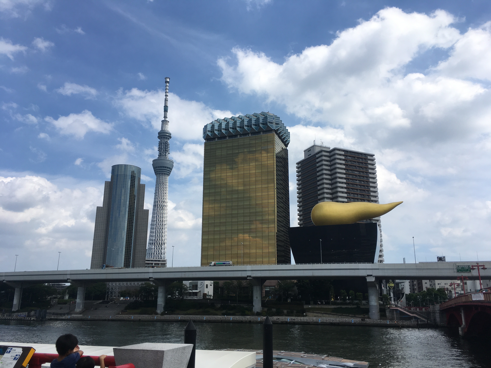
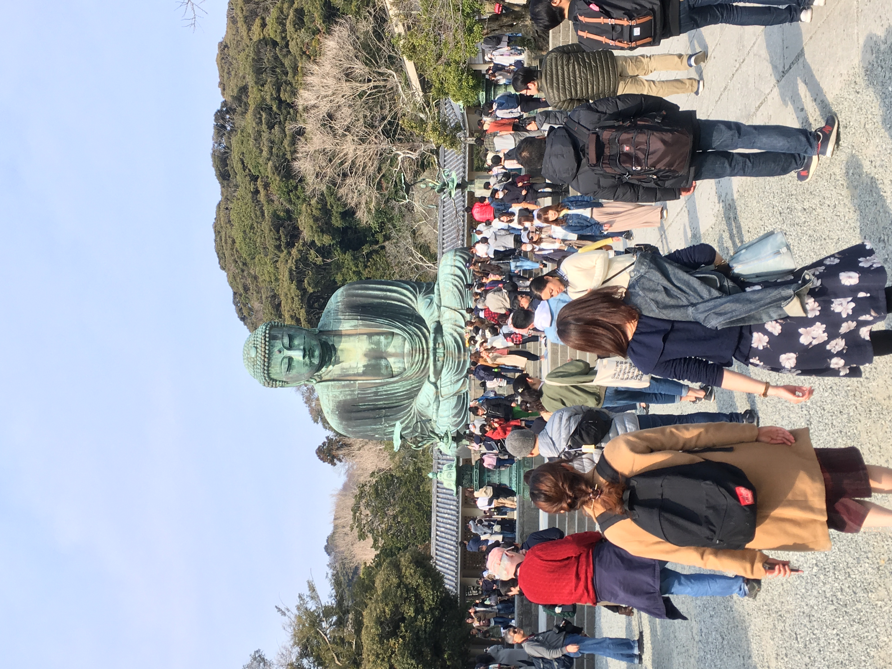
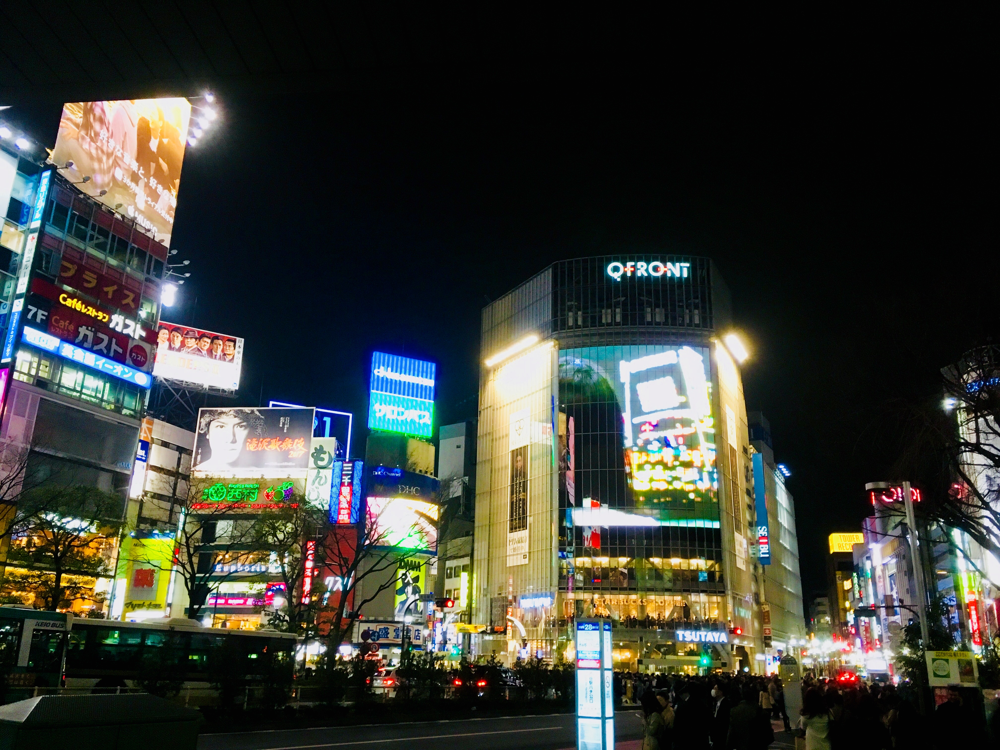
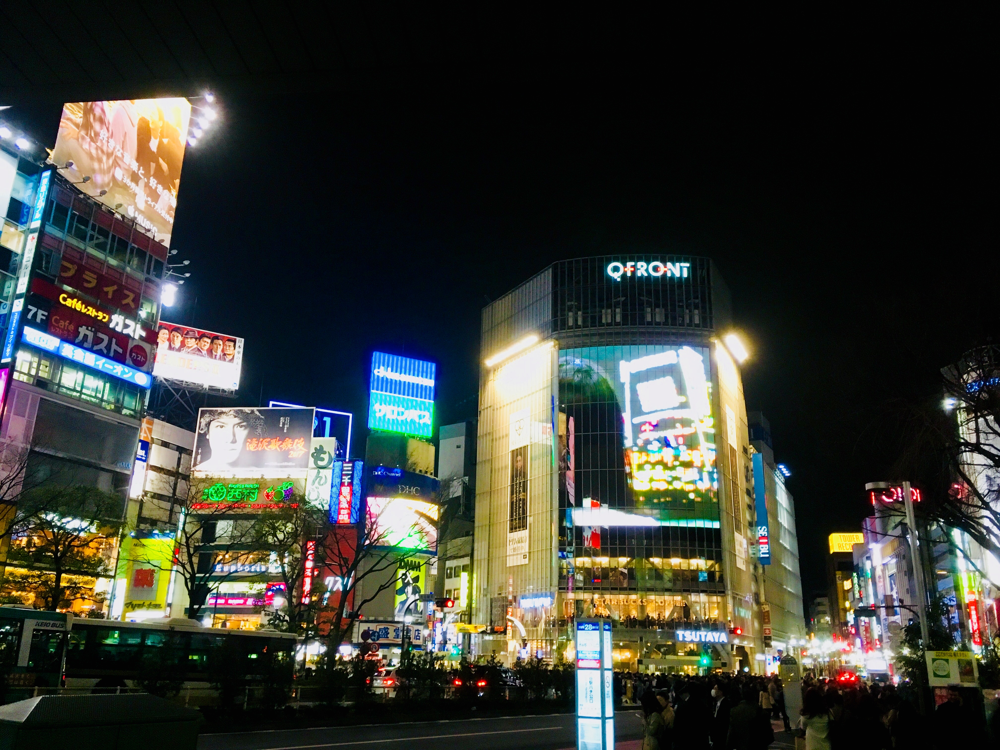

Ein Land voller Extreme - Tempeln zwischen Wolkenkratzern, Schnelllebigkeit neben Traditionsbewusstsein, höfliches Nicken neben bunten Animes. Und obwohl man denken könnte, dass das alles nicht zusammenpasst, beweist das Land einem das Gegenteil.
Seit ich meinen ersten Anime auf Japanisch mit deutschen Untertiteln geschaut habe, übte dieses Land eine merkwürdige Faszination auf mich aus, die ich nicht so ganz in Worte fassen konnte.
Schnell stand also fest: ich muss mir selbst ein Bild von Japan machen, am besten direkt nach der Schule. Dann geschah Fukushima - und mein Plan lag auf Eis. Doch 2017 wagte ich endlich die Reise ins Unbekannte.
Die uralte Kultur, die melodische Sprache, der Wechsel zwischen Moderne und Tradition. Japan zog mich in seinen Bann und lässt mich bis heute nicht los. Für mich ist es ein sicherer Hafen, wo ich mich wohl- und verstanden fühlen kann.
Auch wenn die Städte ihre Reize haben und definitiv einen heftigen Kulturschock auslösen können, fand ich das Umland am faszinierendsten. Hier bekam ich das Gefühl, einen besseren Eindruck vom japanischen Alltag zu bekommen.
Bunt, laut, hektisch und hypnotisierend. So würde ich die Hauptstadt Japans beschreiben. Als ich dort war, lag mein Airbnb nur fünf Minuten von der berühmten Shibuya Kreuzung entfernt. Anfangs war es noch aufregend durch die leuchtenden Hauptstraßen zu laufen. Doch wenn ich zurückblicke, haben mir die kleinen Gassen abseits des Trubels am besten gefallen. Hier konnte man einfach unbehelligt schlendern, ohne sich zwischen Menschenmengen zu schieben.
Ein kleines Städtchen südwestlich von Tokyo. Mit dem Regionalexpress gelangt man in nur einer Stunde dorthin. Bekannt ist der Ort für seine vielen Tempel und Schreine. Und genau diese haben mich unfassbar fasziniert. Man musste nur durch die Straßen laufen und es war sicher, dass man bald an dem großen Tor eines Tempels oder Schreins vorbeikam. Der kleine Bahnhof am Ortsrand hat einen ganz besonderen Charme.
Diese Insel liegt nicht weit von Kamakura entfernt und ist mit einer langen Brücke mit der Hauptinsel Japans verbunden. Am höchsten Punkt steht ein Aussichtsturm. Bei gutem Wetter kann man von dort aus sogar den Fujisan sehen! Empfehlenswert ist die Zugfahrt mit der Enoshima Line - eine kleine grüne Bahn, die nur auf einer Schiene hin- und herfährt. Der Blick aus dem Fenster wird sich lohnen!
 
